Meet our team!
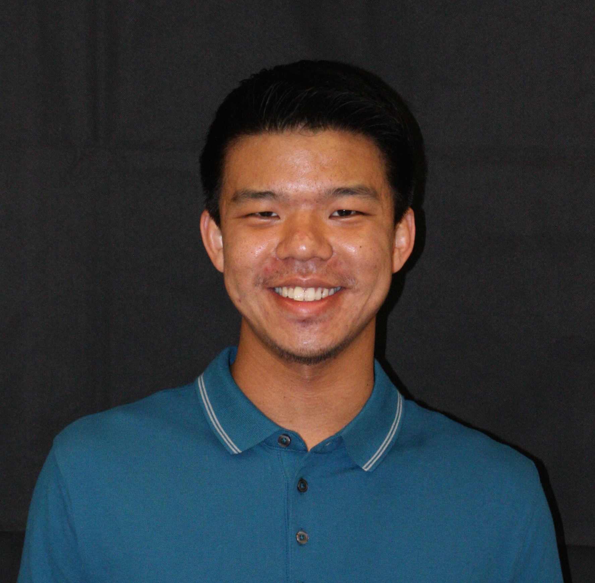
Alfred Zhang
4th year Chemical Engineer
Alfred's interests include electrochemistry, thermodynamics, woodworking, and of course cosmetics. Alfred has experience in special effects makeup as well as conventional makeup, and is eager to apply his skills to create new and improved cosmetics products on the Berkeley Cosmetics Team. Outside of the Berkeley Cosmetics Team, Alfred does research in electrochemistry at Lawrence Berkeley National Laboratory, under Venkat Srinivasan.
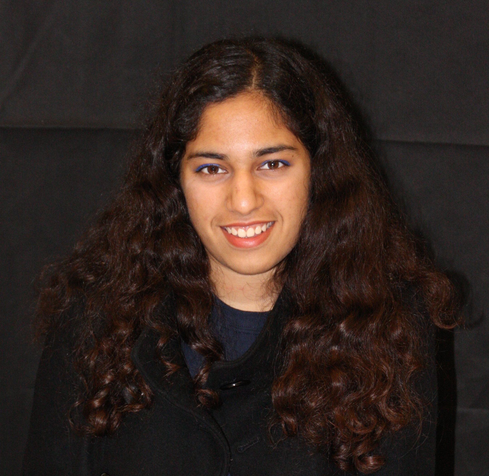
Shivya Bansal
3rd year Chemical Engineer
Shivya's interests are material chemistry, business, fashion design and art. Shivya has had internship experience working with chemical companies and wants to use her passion for chemistry in cosmetics. She had her own small business of accessories which made her realize how much she enjoys entrepreneurship and product design. Shivya wants to develop a new line of cosmetics with Berkeley Cosmetics Team and take it to the next level.
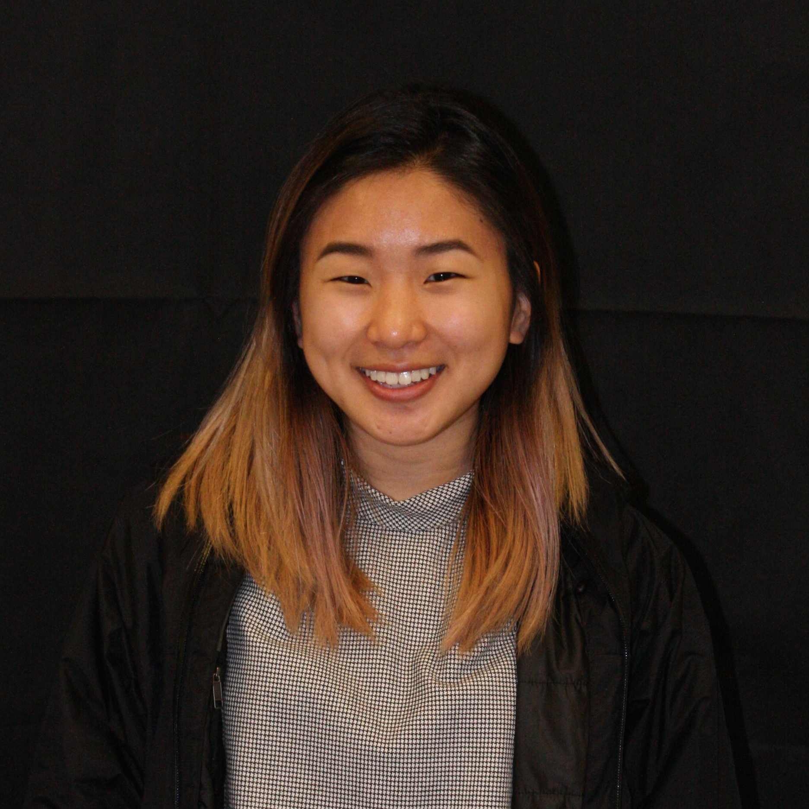
Jocelyn Kim
2nd year Chemical Engineer
When Jocelyn's not working on problem sets and lab reports, she likes to letter, hike, and paint with watercolors. In the past, she'd been involved with genetics and neurology research, but recently found an interest in process design and engineering with an emphasis in environmental technology. Jocelyn is concurrently working as a designer for an apparel company and hopes to contribute to the Berkeley Cosmetics team with her personal experiences in art and skin care.
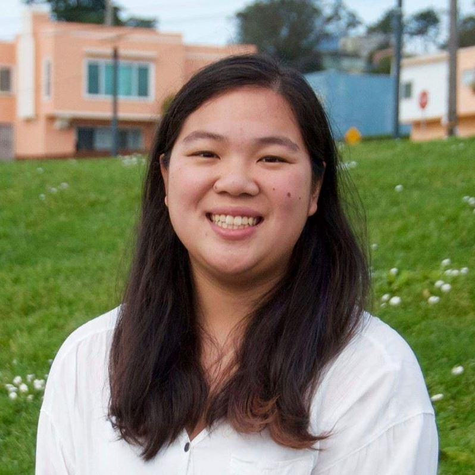
Cynthia Tien
1st year Chemical Engineer and CS
Cynthia is interested in material chemistry and sustainable chemistry, as well as web development. Her hobbies include dragonboating and playing music. In the past, she's worked in research with plasma technology. Her younger sisters are involved with dance, so she has them with stage makeup. Cynthia wants to create cosmetic solutions that will be able to be used by a wide range of people and help with common problems.
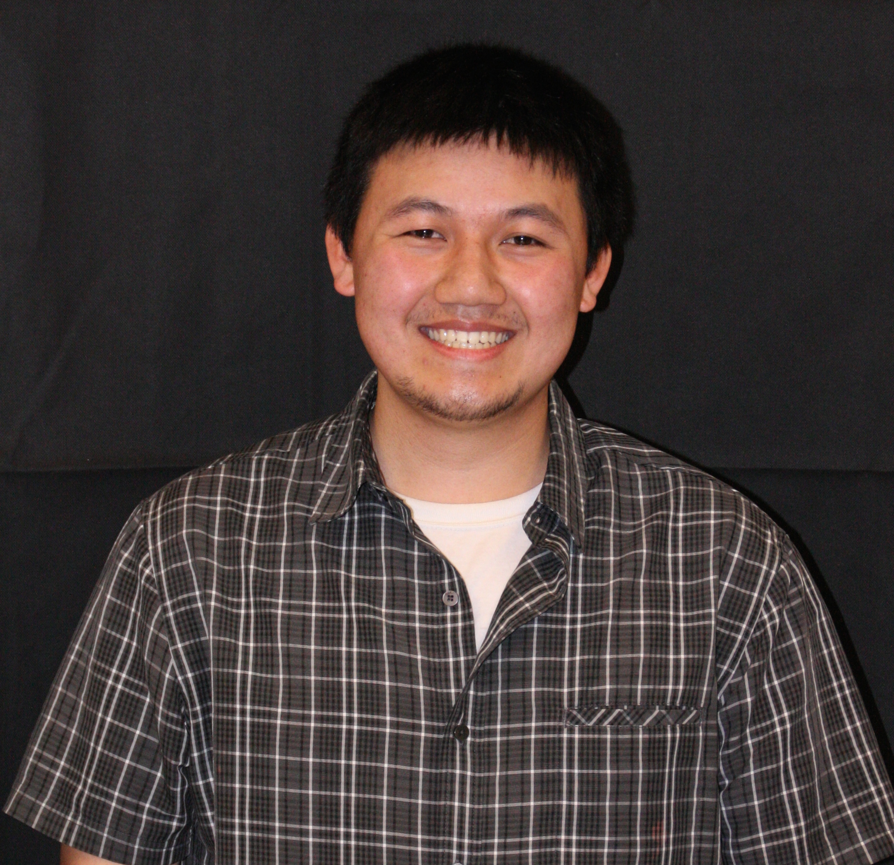
Peter Nguyen
3rd year Chemical Engineer
Peter's interests include sustainable engineering, process design, and environmental engineering. He enjoys listening to music and playing racquetball. Peter recently assisted with a project investigating the chemical ingredients and potential health impacts of synthetic turf rubber. He hopes to contribute to sustainable development and product safety for the Berkeley Cosmetics Team.
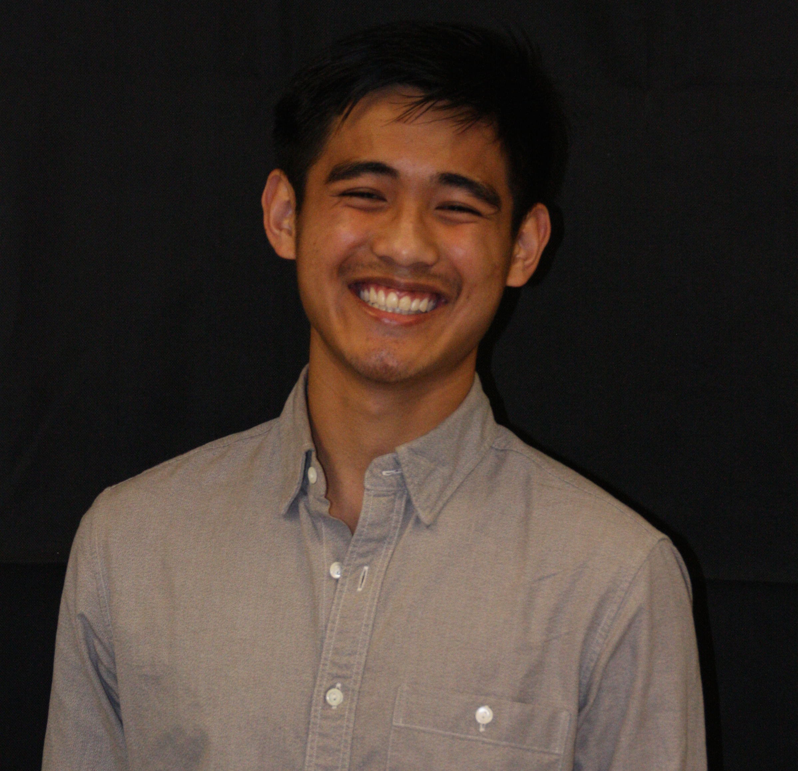
Nigel Faustino
2nd year Chemical Engineer
Nigel's interests include sustainable energy, thermodynamics, and materials design. In his free time, when not panicking over above interests, he enjoys reading and listening to Kanye West. He has absolutely no experience in cosmetics but is eager to learn. He is a lab assistant at the UC Pavement Research Center, where he researches and tests pavement for the state of California. He hopes to help develop new solutions to people's skincare and cosmetics needs with the team.
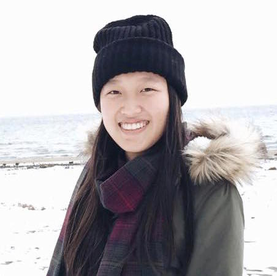
Ziqi Chen
2nd year Computer Science
Ziqi's interests include UI/UX Design, Graphic Design, and Mobile and Web Development. In her free time, she enjoys experimenting with Adobe Sketch and Illustrator, playing sports, and listening to alternative music. She works as a mobile application developer for a research lab in Lawrence Berkeley National Laboratory. She also loves experimenting with makeup, especially her Naked Palette. She hopes to help advertise and brand the products created by the cosmetics team and improve the overall user experience of makeup.
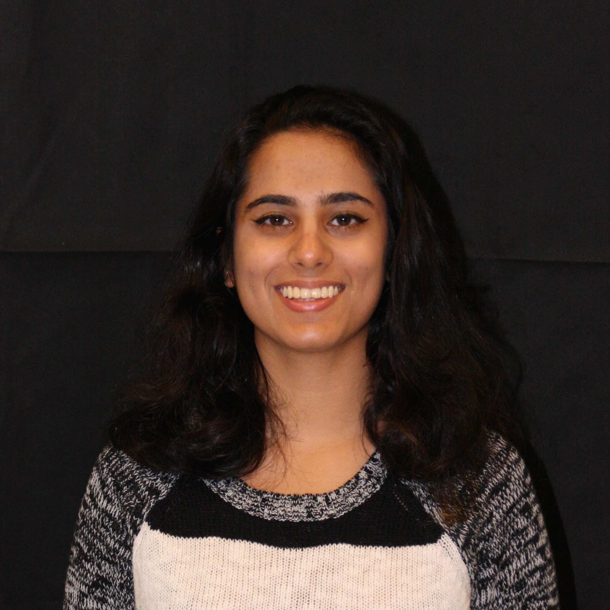
Sanya Sehgal
2nd year Chemical Engineering
Sanya enjoys learning about fluid mechanics and renewable energy sources. When not doing homework or studying for midterms, Sanya enjoys reading, playing soccer, and cooking. She is currently involved in a project to create biodiesel from algal biomass. Sanya loves experimenting with eyeliner and has some experience with stage makeup. She is excited to be a part of the Berkeley Cosmetics Team because she wants to help create a line of cosmetics that will enable more people to find the right shade for them.
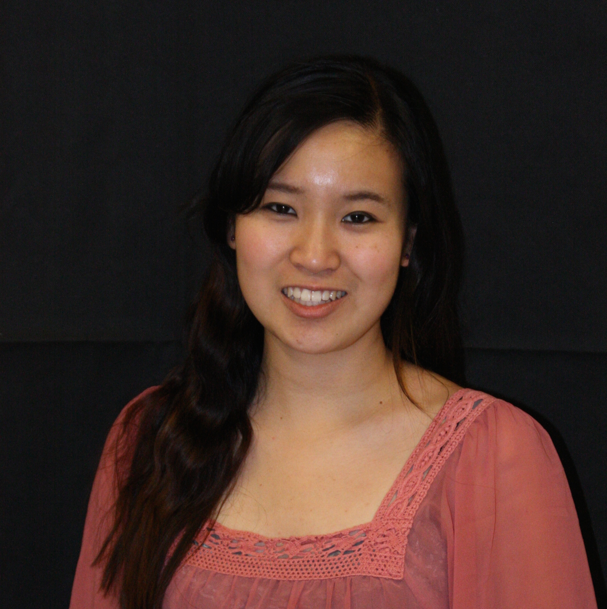
Tiffany Lay
4th year Chemical Engineer
Tiffany has worked in three different research labs focusing on microbiology, nuclear engineering, and biotechnology processing. Currently her technical interests lie in product development and manufacturing, and she intends to pursue an MS in Mechanical Engineering after graduation. Outside of class she enjoys learning Chinese and Korean, learning K-Pop dance, watching sitcoms such as Fresh Off the Boat and Silicon Valley, going to the gym, and traveling to new places. She regularly visits Sephora to experiment with new products, and she also avidly watches make-up tutorials on Youtube to get new ideas. Tiffany hopes to apply her interest in product development and materials science to Berkeley Cosmetics' research.

Elizabeth Chyn
1st year Chemical Engineer
Elizabeth's interests include acid/base chemistry, process design, and product development and testing. When she is not studying or doing labwork, Elizabeth enjoys listening to Fall Out Boy, watching YouTube, and reading fiction. Elizabeth is very experienced with applying cosmetics to her own face but wants to explore her interest in makeup by becoming proficient at applying makeup to others and developing new products with the Berkeley Cosmetics Team.
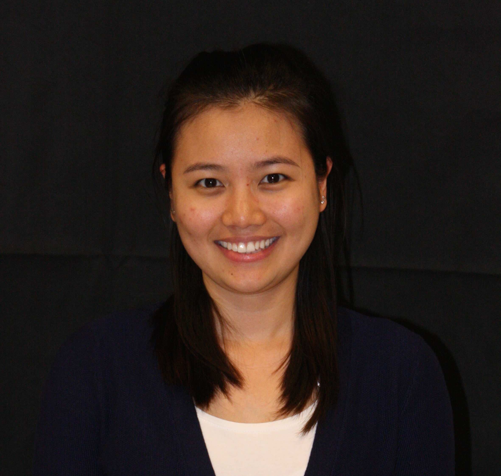
Chau M Vo
4th year Chemical Engineer
Chau has more than 3 years of experience working in a Chemistry lab as a lab technician assistant. Her technical interests include process design and product development. Currently she is seeking a full time position as a process engineer after graduation. On her free time, she likes hanging out with her friends, trying new food, watching movies, and exploring new places. She enjoys trying new makeup products, watching makeup tutorials on Youtube and applying makeup to others. She wants to apply her technical and makeup interests to develop new makeup products with Berkeley Cosmetics Team.
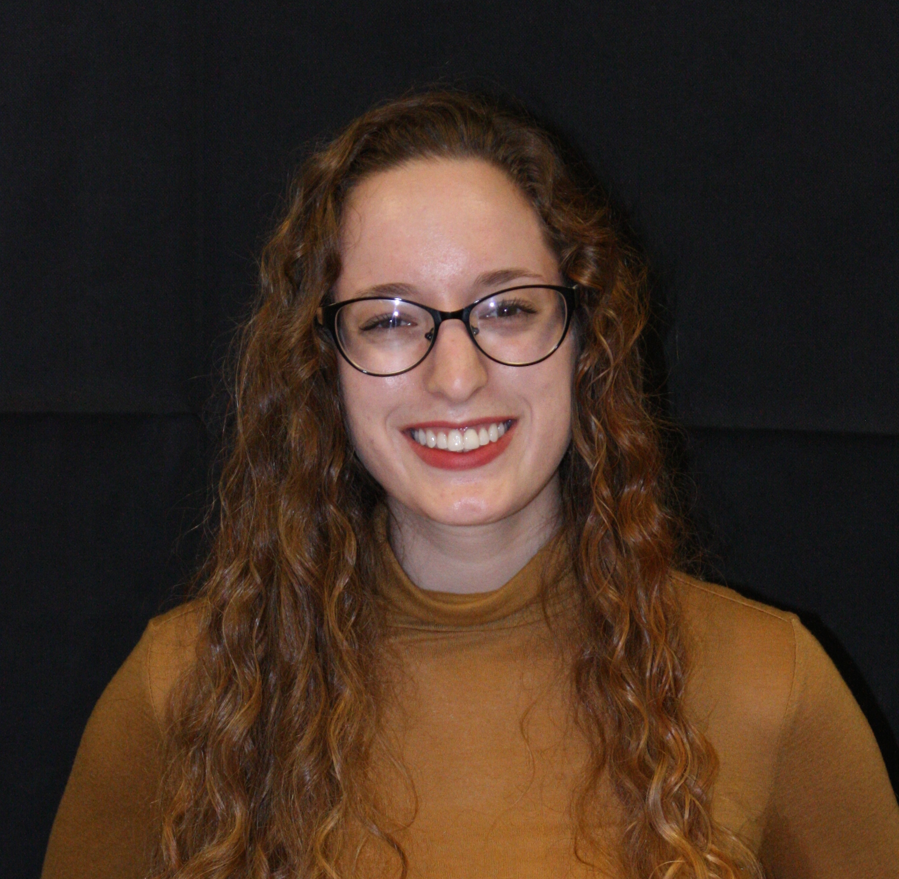